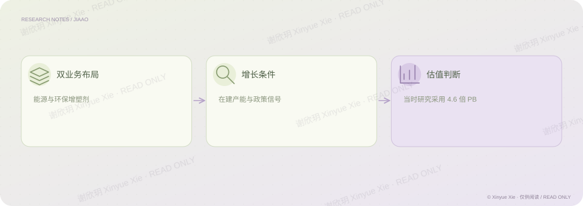

中信证券 · 公司研究
嘉澳股份：转型与产能的价值判断
产能与政策预期，怎样落到公司价值？
PROJECT NOTES / THE BIG PICTURE
研究思路

01核心判断
嘉澳股份研究围绕生物质能源与环保增塑剂两条业务展开。我结合百万吨在建产能、政策变化、实控人增持及大客户参与等因素形成当时的公司判断，并以 4.6 倍市净率表达估值。产能和政策提供了理解未来增长的线索，但预期与经营结果之间仍有距离：在建产能并不是已经实现的利润，估值判断也需要后续经营兑现来验证。
02分析过程
先理解两条业务各自的经营特征。 区分在建产能、政策信号与实际兑现的经营结果。 解释当时采用市净率估值的思路及其限制。
相关经历中信证券 · 能源化工
理解商业
同时分析两条业务、产能预期和政策影响。
建立模型
以当时的市净率框架表达公司判断。
检验证据
区分在建产能与已兑现的经营结果。
谢欣玥 Xinyue Xie · 研究作品仅供在线阅读
← 返回全部作品